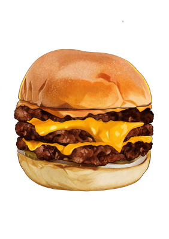
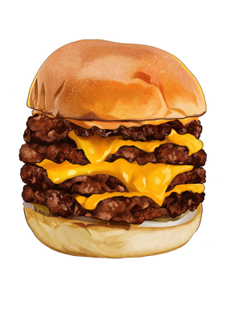
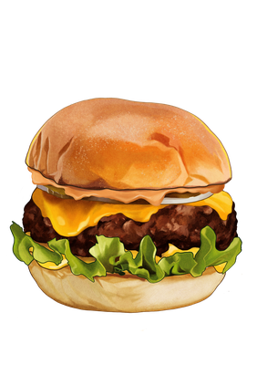
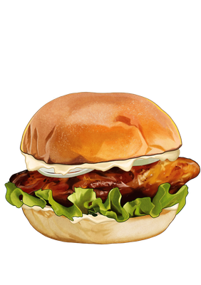
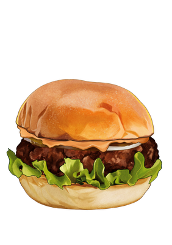

Our signature smash — thin patties, house sauce, American cheese.
98

Honbo 1.5 漢堡 1.5
Extra patty, same signature style — the crowd favourite.
118

Honbo 2.0 漢堡 2.0
Four crispy-edged patties, cheese, pickles, onion, house sauce.
158
Double Cheeseburger 雙層芝士堡
Thick patties, classic style — 4 oz & 6 oz options.
158

Cheeseburger 芝士堡
Traditional thick patty, American cheese, done right.
108

Teriyaki Burger 照燒漢堡
Sweet, savoury, smashed to order — local twist.
118

Hamburger 純肉漢堡
No cheese, all beef — for the purist.
98
Prices in HKD · 價錢以港元為準 · Full menu in-store
About Us
我哋嘅故事 · Our Origin
Born in 2017 on Sun Street, Wan Chai, Honbo is a home-grown Hong Kong burger joint that celebrates the simple things done right. We are a community-driven restaurant that focuses on honest, high-quality ingredients.
From our signature potato milk buns to our custom blend of double-gold medal winning beef — everything is handmade, smashed fresh, and served with pride.
「Honbo」即係廣東話「漢堡」—— 一個好本地、好直接嘅名字。
Catering
到會 · 派對 · 公司活動
Bring Honbo to your next gathering — smash burgers, hand-cut fries, onion rings, and classic shakes, packed fresh across Hong Kong.
Honbo smash burgers in Hong Kong — reviews and features from food writers worldwide, plus Bloomberg, Financial Times and Time Out recognition.
4.9foodpanda rating
2017Wan Chai since
2HK locations
★★★★★Foodie
“Honbo was founded in 2017 with a focus on home-grown ingredients, from preservative-free potato milk buns made by a local artisanal baker to creative drinks at the shop. We rate the simple, no-frills menu and USDA Double Gold beef used to craft the juicy smash burgers.”
“With several members on Team Sassy as self-proclaimed Honbo lovers… you can expect everything at this grassroots burger restaurant to be sourced from the very best local spots, with juicy beef and perfectly crisped buns. The loaded cheese fries are the best in town!”
“Unlike a lot of beef burgers — which are overly salty and greasy — Honbo has taken another approach… a soft potato milk bun complementing the fillings and the beef patty, the Honbo burger has achieved a nice balance of meat and smoky flavours.”
Wan Chai · American-style burgers with vegan options
“Honbo serves excellently executed good ol’ burgers that are made with quality ingredients… buttery, meaty and crusty burger patties, fluffy potato milk buns, no preservatives and MSG.”
“Quite an impressive burger… juicy beef patty which is made even better with the crispy bacon and cheese. Sandwiching its patties are house-made potato milk buns… from an exclusive recipe developed with renowned artisanal baker Eric Kayser.”
“Honbo gets many things right… six seared surfaces, alternating with cheese… stuffed between potato milk buns. That is very close to burger nirvana for me.”
“Each juicy stack is made from high-quality ingredients: freshly ground Wisconsin beef; pillowy housemade potato milk bun from a recipe by the renowned Eric Kayser; house-cured Japanese pickles; and specialty sauces.”
“Honbo is one of the best burgers in HK!” · “Surprised by how good the cheeseburger was even after delivery.” · “Really love Honbo for their lettuce bun!”